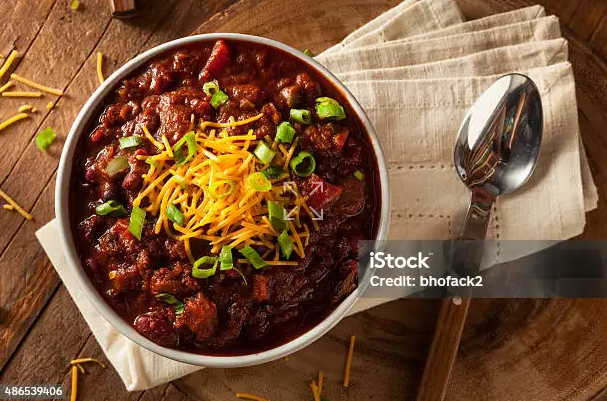

Easy Homemade chili
Homemade chili is delicious and goes great with cornbread or over corn chips for a chilli pie! I like to use spicy pinto beans.

- Prep Time : 10 mins
- Cook Time : 20 mins
- Total Time : 30 mins
- Servings : 6
This homemade chili is loaded with beans and crowd pleasing flavor.
How Do You Make Homemade Chili?
Here's a very brief overview of what you should do :
- cook the beans and the onion.
- Add the remaining ingredients, then bring to a boil.
- Reduce the heat and let simmer for 15 minutes.
Ingredients
- 1 onion(chopped)
- 1 (15 ounce) can tomato sauce
- 1 (15 ounce) can kidney beans
- 1 (14.5 ounce) can stewed tomatoes
- 1.5 cups of water, or as needed(optional)
- 1 pinch chili powder, or more to taste
- 1 pinch garlic powder
- salt and pepper to taste
Nutrition Facts
- 394 Calories
- 9g Fat
- 49g Carbs
- 31g Protein
Go back